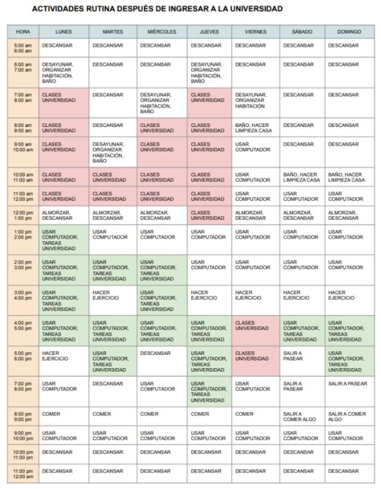
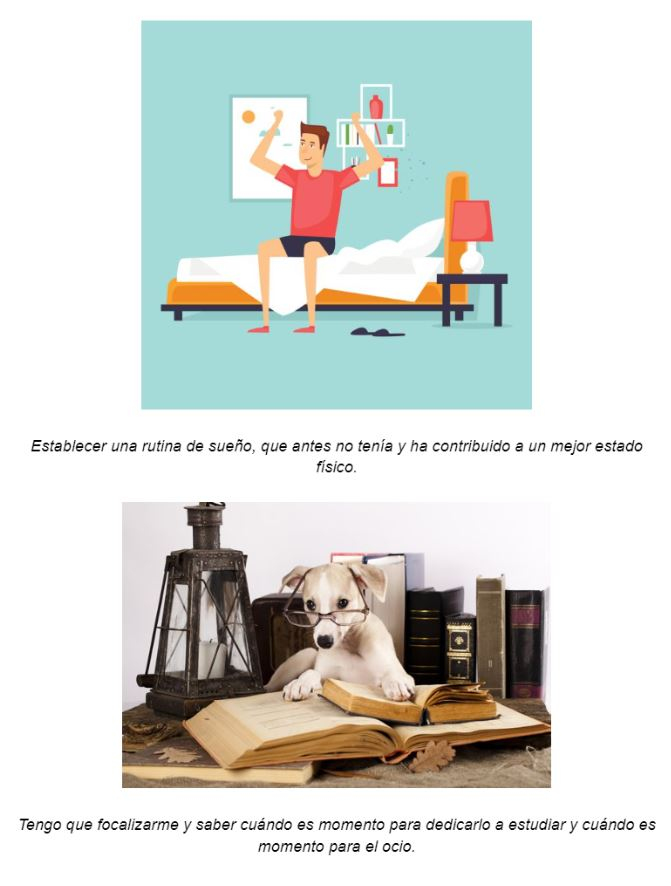
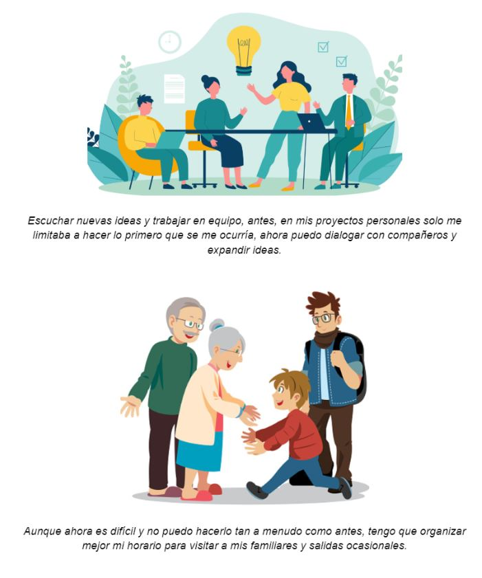

Desde que empecé la universidad, mi rutina ha cambiado mucho. Antes no me dedicaba mucho a nada en particular, pero ahora me aseguro de reservar tiempo todos los días para concentrarme en mis estudios y mis actividades extracurriculares. También me he vuelto más activo y me aseguro de hacer ejercicio o salir a pasear la mayoría de los días. Definitivamente siento que me he vuelto más disciplinado y enfocado desde que comencé la universidad. Todo esto contribuye a mis metas:
A corto plazo:
Terminar todas mis tareas y exámenes a tiempo. Sacar buenas notas en todos mis cursos.
A mediano plazo:
Para participar en actividades extracurriculares que me apasionan Para hacer nuevos amigos y contactos.
A largo plazo:
Graduarme. Encontrar un trabajo que me apasione y que pueda verme haciendo a largo plazo.

Imágenes sobre cómo ha cambiado mi rutina desde el ingreso a la universidad
 